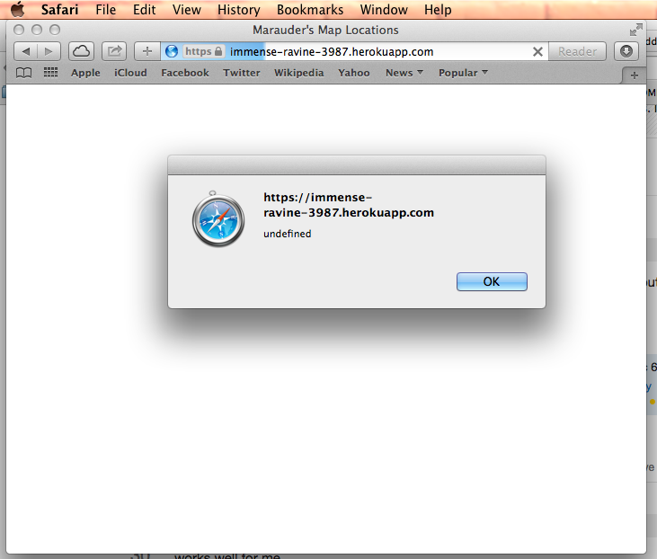
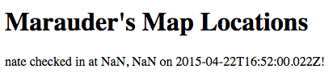
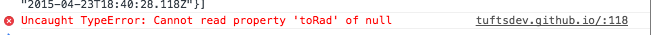
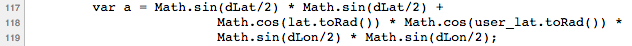
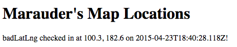

Author: Nate Matthews, 4/23/2015
The Marauder's Map, according to the specifications of the assignment that Alex built it for, does two things: 1. Retrieves your current location and sends your current location to a datastore that I created, and 2. Retrieves and displays the locations of people in the class on the map. This location information is stored in a database by a server. I have been hired to asses the security of both the map application and the server.
I began with a black box method of simply attacking the products themselves, then moved on to looking at the code provided to me. To attack the server, I used my browser and curl.
All my suggestions have a common theme, which is that the application and server are too trusting of the user inputs, allowing users to input potentially harmful data. In the least worst cases, these sorts of vulnerabilities might simply make the product run slow or crash. In other cases however, such as with script injection, these vulnerabilities can pose a serious security threat by giving a user control over other people's computers.
Cross-Site Scripting
$curl --data "login='<script>alert();</script>&lat=0&lng=0" https://immense-ravine-3987.herokuapp.com/sendLocation -o output.txt
|  |
Server stores NaN values when provided latitude and longitude values are not numbers
1 var post_login = request.body.login;
2 var post_lat = parseFloat(request.body.lat);
3 var post_lng = parseFloat(request.body.lng);
4 // Ensure numeric latitude and longitude
5 if (isNaN(post_lat) || isNaN(post_lng)) {
6 response.send({"error":"Whoops, something is wrong with your data!"});
7 }
8
9 var d = new Date();
10
11 var toInsert = {
12 "login": post_login,
13 "lat": post_lat,
14 "lng": post_lng,
15 "created_at": d.toISOString()
16 };curl --data "login=nate&lat=badlat&lng=badlng" https://immense-ravine-3987.herokuapp.com/sendLocation|  |
|  |  |
Server stores and serves latitude and longitude values out of valid range
curl --data "login=badLatLng&lat=100.3&lng=182.6" https://immense-ravine-3987.herokuapp.com/sendLocation|  |
if ((abs(post_lat) > 90) || (abs(post_lat) > 180)) {
response.send({"error":"Latitude must be between -90 and 90, and longitude must be between -180 and 180."});
}
Once again, the main issue is that these products are too trusting of user input. Besides adding the checks suggested above (for dangerous characters, for non-number inputs, for out-of-bounds inputs), Alex should consider imposing even more restrictions on user input, such as restrictions on the size of inputs, and frequency of inputs (to prevent a denial-of-service type attack where a user tries to overwhelm the server). I would implement such changes for a couple of meal swipes at Dewick.